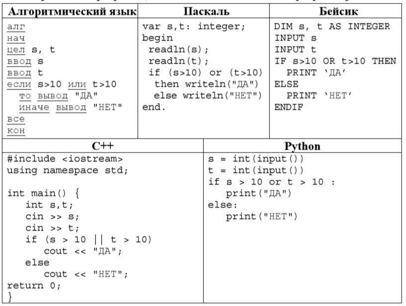

Информатика
Некоторые задания из ОГЭ
Статистика показывает, что одними из самых сложных заданий для учеников являются 6, 8, 12 и 15 задания.
Задание 6
Пример решения задания:
Ниже приведена программа, записанная на пяти языках программирования.
Было проведено 9 запусков программы, при которых в качестве значений переменных вводились следующие пары чисел (s, t):
(1, 2); (11, 2); (1, 12); (11, 12); (-11, -12); (-11, 12); (-12, 11); (10, 10); (10, 5)
Сколько было запусков, при которых программа напечатала «YES»?
Решение:
Вспомним, что логическая операция ИЛИ (or) истинна, когда хоть одно из условий истинно, а ложна только тогда, когда ОБА условия ложны.
Рассмотрим каждый запуск отдельно:
- 1. (1, 2): if (1>10) or (2>10) // условие ложно (оба ложны), выводим “НЕТ”
- 2. (11, 2): if (11>10) or (2>10) // условие истинно (11>10), выводим “ДА”
- 3. (1, 12): if (1>10) or (12>10) // условие истинно (12>10), выводим “ДА”
- 4. (11, 12): if (11>10) or (12>10) // условие истинно (11>10) и (12>10), выводим “ДА”
- ...
- 1). Операция «И» (&) в поисковом запросе всегда ограничивает поиск (уменьшает количество страниц в выдаче), т. е., в ответ на запрос яблоко И груша поисковый сервер выдаст меньше страниц, чем на запрос яблоко, потому что будет искать страницы, на которых присутствуют оба этих слова;
- 2). Операция «ИЛИ» (|) в поисковом запросе всегда расширяет поиск (увеличивает количество страниц в выдаче), т. е., в ответ на запрос яблоко ИЛИ груша поисковик выдаст больше страниц, чем на запрос яблоко, потому что будет искать страницы, на которых присутствует хотя бы одно из этих слов (или сразу оба слова).
- Откройте каталог Проза.
- В поле для поиска введите маску для поиска фалов с любым именем но обязательно с расширением
txt:
Анализируя ход решений, понимаем, что «Да» будет напечатано при запуске, когда хоть одно из двух введенных значений больше 10, или оба значения больше 10. Выберем такие запуски и посчитаем их количество:
(11, 2) (1, 12) (11, 12) (-11, 12) (-12, 11)
Получили 5 вариантов запуска.
Ответ: 5
Задание 8
В задании №8 требуется безупречное владение кругами Эйлера, либо знание «лайфхаков» как это задание упростить. Каждый круг Эйлера обозначает множество объектов (то есть набор каких-либо объектов, заданный так, что про вообще любой объект можно однозначно определить, есть он в этом наборе, или нет), а точка — один объект. Точка рисуется внутри круга, если объект принадлежит этому множеству, а иначе — снаружи круга.
В этом задании встречаются 2 операции:
Пример решения задания:
Известно количество сайтов, которых находит поисковый сервер по следующим запросам:
| Ключевое слово | Количество сайтов, для которых данное слово является ключевым |
|---|---|
| Глинка & Лист | 320 |
| Бах & Лист | 280 |
| (Глинка | Бах) & Лист | 430 |
Сколько сайтов будет найдено по запросу: Глинка & Бах & Лист?

Задание 12
Пример решения задания:
Сколько файлов с расширением .txt содержится в подкаталогах каталога Проза? В ответе укажите только число.
ПрозаРешение:
*.txt
* означает последовательность любых символов.

Ответ: 16
Задание 15
Пример решения задания:
Исполнитель Робот умеет перемещаться по лабиринту, начерченному на плоскости, разбитой на клетки. Между соседними (по сторонам) клетками может стоять стена, через которую Робот пройти не может. У Робота есть девять команд. Четыре команды — это команды-приказы:
вверх
вниз
влево
вправо
При выполнении любой из этих команд Робот перемещается на одну клетку соответственно. Если Робот получит команду передвижения сквозь стену, то он разрушится. Также у Робота есть команда закрасить, при которой закрашивается клетка, в которой Робот находится в настоящий момент. Ещё четыре команды — это команды проверки условий. Эти команды проверяют, свободен ли путь для Робота в каждом из четырёх возможных направлений:
сверху свободно
снизу свободно
слева свободно
справа свободно
Эти команды можно использовать вместе с условием «если», имеющим следующий вид:
- если "условие" то
последовательность команд
- все
Здесь условие — одна из команд проверки условия. Последовательность команд — это одна или несколько любых команд-приказов. Например, для передвижения на одну клетку вправо, если справа нет стенки, и закрашивания клетки можно использовать такой алгоритм:
- если справа свободно то
вправо
закрасить
- все
В одном условии можно использовать несколько команд проверки условий, применяя логические связки и, или, не, например:
- если справа свободно и не снизу свободно то
вправо
- все
Для повторения последовательности команд можно использовать цикл «пока», имеющий следующий вид:
- нц пока условие
последовательность команд
- кц
Где кц — конец цикла, нц — начало цикла. Например, для движения вправо, пока это возможно, можно использовать следующий алгоритм:
- нц пока справа свободно
вправо
- кц
Выполните задание:
На бесконечном поле есть горизонтальная и вертикальная стены. Правый конец горизонтальной стены соединён с нижним концом вертикальной стены. Длины стен неизвестны. В вертикальной стене есть ровно один проход, точное место прохода и его ширина неизвестны. Робот находится в клетке, расположенной непосредственно под горизонтальной стеной у её левого конца. На рисунке указан один из возможных способов расположения стен и Робота (Робот обозначен буквой «Р»).
Напишите для Робота алгоритм, закрашивающий все клетки, расположенные непосредственно правее вертикальной стены. Проход должен остаться незакрашенными. Робот должен закрасить только клетки, удовлетворяющие данному условию. Например, для приведённого выше рисунка. Робот должен закрасить следующие клетки (см. рисунок).
При исполнении алгоритма Робот не должен разрушиться, выполнение алгоритма должно завершиться. Конечное расположение Робота может быть произвольным. Алгоритм должен решать задачу для любого допустимого расположения стен и любого расположения и размера прохода внутри стены. Алгоритм может быть выполнен в среде формального исполнителя или записан в текстовом редакторе. Сохраните алгоритм в текстовом файле.
Решение:
Возможны другие варианты алгоритма для робота:
Вот мы и разобрали 4 задания из ОГЭ, желаем удачи всем сдающим информатику!